India Market Pulse — 11 September 2026
A clear view of price trends, valuations, market breadth and pullbacks across India's key broad-market indices.
Contents
- Market at a Glance
- Nifty 50
- Nifty Midcap 100
- Nifty Next 50
- Nifty Smallcap 250
- Market Breadth by Index
- Sources
- Disclaimer
Market at a Glance
A compact comparison of indices.
- Free-float market cap: The value of shares available for public trading, measured in ₹ lakh crore. Each value includes its source date in the index section below.
- 3Y P/E position: Compares today's P/E with the index's own three-year history. A low percentile is near its three-year low; a high percentile is near its three-year high.
- Stocks up today: Shows market breadth—the percentage of stocks in the index that rose today.
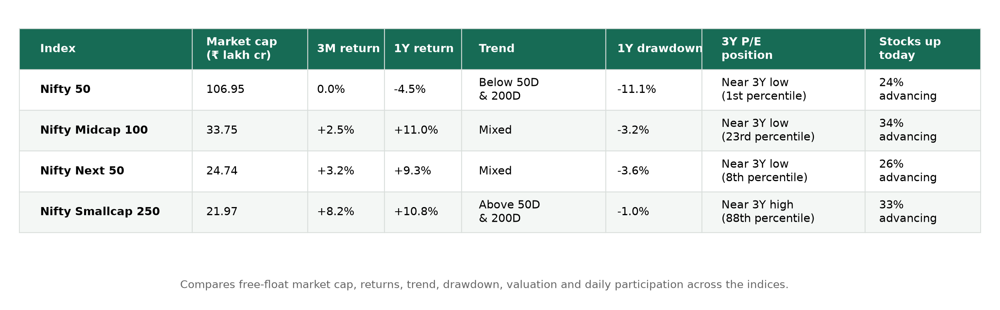
Nifty 50
What it represents: India's 50 large, liquid companies across major sectors.
Close: 23,398.10 · Day change: -0.34% · 50D MA 24,153.42 (-3.13%) · 200D MA 24,550.08 (-4.69%) · Free-float market cap: ₹106.95 lakh crore (as of 11 September 2026)
Price
Price return shows how much the index rose or fell over each period. Current read — 3M: 0.0% · 1Y: -4.5% · 3Y: +18.6%.
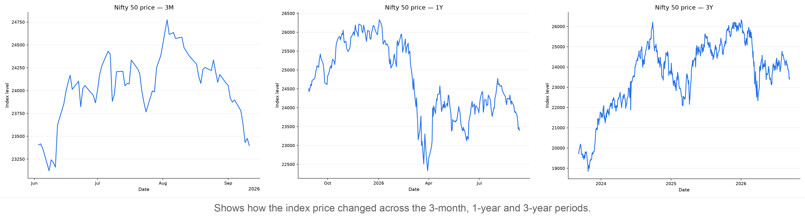
P/E
P/E compares index price with constituent earnings; the percentile shows where today's valuation sits within each period.
3M: 19.78 versus 20.57 median, 1st percentile (lower end)
1Y: 19.78 versus 21.45 median, 1st percentile (lower end)
3Y: 19.78 versus 22.21 median, 1st percentile (lower end)
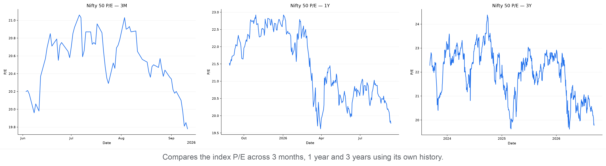
P/B
P/B compares index price with constituent book value; the percentile shows where today's P/B sits within each period.
3M: 2.83 versus 3.02 median, 3rd percentile (lower end)
1Y: 2.83 versus 3.31 median, 1st percentile (lower end)
3Y: 2.83 versus 3.54 median, 1st percentile (lower end)
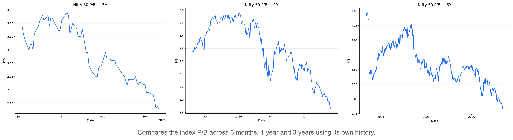
Moving Averages
The 50-day average shows the shorter trend and the 200-day average shows the longer trend. Current read — -3.1% versus the 50-day average; -4.7% versus the 200-day average; the 50-day is below the 200-day (bearish alignment).
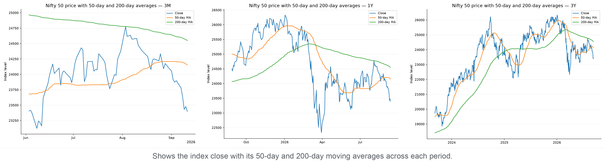
Support & Resistance
Zones use confirmed five-bar swing points clustered into 0.5% price bands; distances are measured from today's close.
3M: support 23,012–23,131 (1.1% below); resistance 23,458–23,665 (0.3% above)
1Y: support 23,093–23,376 (0.1% below); resistance 23,407–23,665 (0.0% above)
3Y: support 22,897–23,210 (0.8% below); resistance 23,402–23,665 (0.0% above)
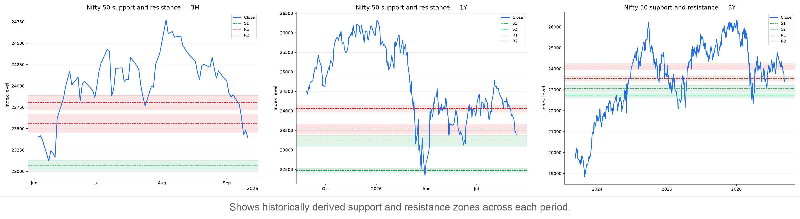
Drawdown
Drawdown is the percentage below the highest close reached within each chart's own period. Current pullback in context:
3M: Now 5.6% below peak · Worst 5.6% · At this level or lower on 1% of 72 trading days
1Y: Now 11.1% below peak · Worst 15.2% · At this level or lower on 8% of 258 trading days
3Y: Now 11.1% below peak · Worst 15.8% · At this level or lower on 9% of 743 trading days
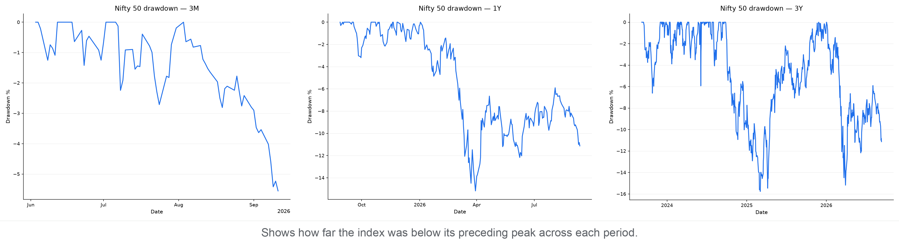
Nifty Midcap 100
What it represents: A diversified benchmark of 100 mid-cap Indian companies.
Close: 62,197.20 · Day change: -0.26% · 50D MA 63,097.95 (-1.43%) · 200D MA 60,375.11 (+3.02%) · Free-float market cap: ₹33.75 lakh crore (as of 11 September 2026)
Price
Price return shows how much the index rose or fell over each period. Current read — 3M: +2.5% · 1Y: +11.0% · 3Y: +53.2%.
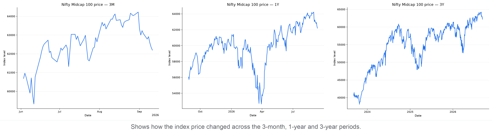
P/E
P/E compares index price with constituent earnings; the percentile shows where today's valuation sits within each period.
3M: 29.98 versus 30.20 median, 35th percentile (below the middle)
1Y: 29.98 versus 32.19 median, 13th percentile (lower end)
3Y: 29.98 versus 33.15 median, 23rd percentile (lower end)
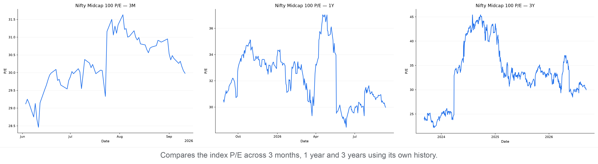
P/B
P/B compares index price with constituent book value; the percentile shows where today's P/B sits within each period.
3M: 4.28 versus 4.69 median, 1st percentile (lower end)
1Y: 4.28 versus 4.34 median, 32nd percentile (below the middle)
3Y: 4.28 versus 4.52 median, 30th percentile (below the middle)
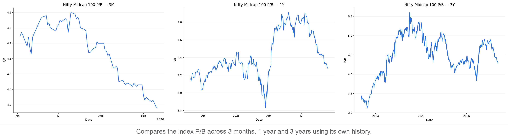
Moving Averages
The 50-day average shows the shorter trend and the 200-day average shows the longer trend. Current read — -1.4% versus the 50-day average; +3.0% versus the 200-day average; the 50-day is above the 200-day (bullish alignment).
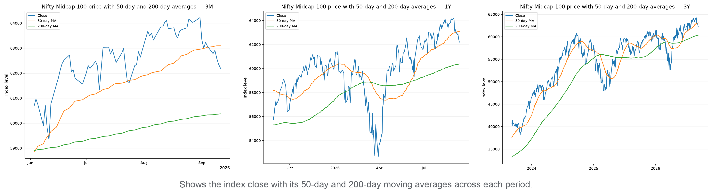
Support & Resistance
Zones use confirmed five-bar swing points clustered into 0.5% price bands; distances are measured from today's close.
3M: support 61,204–61,515 (1.1% below); resistance 62,754–63,563 (0.9% above)
1Y: support 61,393–61,704 (0.8% below); resistance 62,456–63,182 (0.4% above)
3Y: support 61,204–61,704 (0.8% below); resistance 62,456–63,182 (0.4% above)
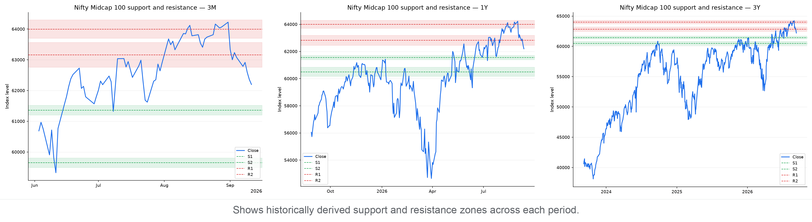
Drawdown
Drawdown is the percentage below the highest close reached within each chart's own period. Current pullback in context:
3M: Now 3.2% below peak · Worst 3.2% · At this level or lower on 1% of 72 trading days
1Y: Now 3.2% below peak · Worst 14.3% · At this level or lower on 22% of 259 trading days
3Y: Now 3.2% below peak · Worst 21.3% · At this level or lower on 41% of 747 trading days
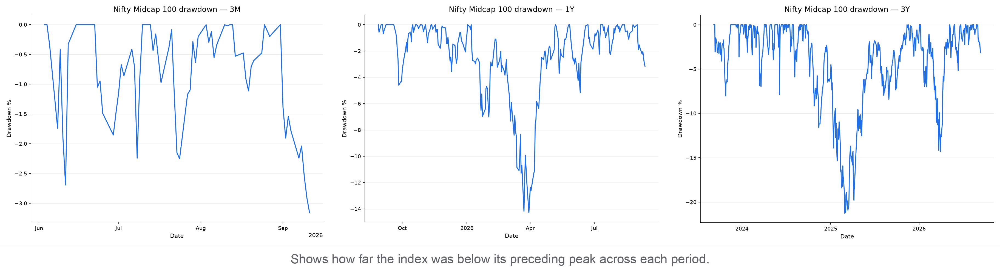
Nifty Next 50
What it represents: The 50 largest companies outside the Nifty 50 within the Nifty 100.
Close: 72,083.70 · Day change: -0.62% · 50D MA 73,223.19 (-1.56%) · 200D MA 69,884.00 (+3.15%) · Free-float market cap: ₹24.74 lakh crore (as of 11 September 2026)
Price
Price return shows how much the index rose or fell over each period. Current read — 3M: +3.2% · 1Y: +9.3% · 3Y: +57.6%.
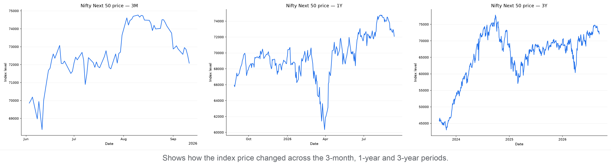
P/E
P/E compares index price with constituent earnings; the percentile shows where today's valuation sits within each period.
3M: 19.06 versus 19.25 median, 43rd percentile (below the middle)
1Y: 19.06 versus 19.69 median, 24th percentile (lower end)
3Y: 19.06 versus 22.02 median, 8th percentile (lower end)
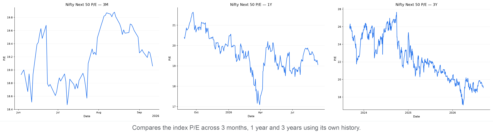
P/B
P/B compares index price with constituent book value; the percentile shows where today's P/B sits within each period.
3M: 3.21 versus 3.45 median, 1st percentile (lower end)
1Y: 3.21 versus 3.57 median, 1st percentile (lower end)
3Y: 3.21 versus 3.76 median, 1st percentile (lower end)
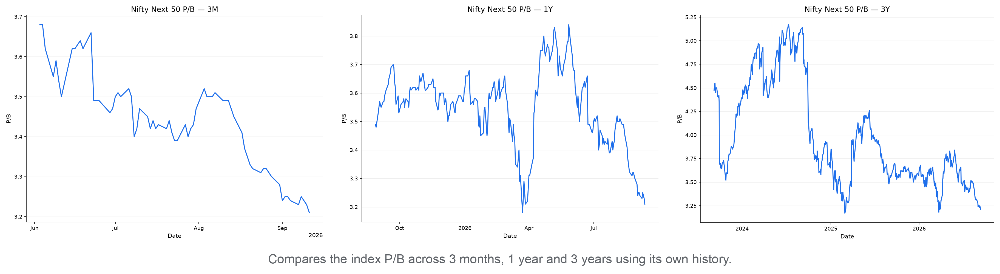
Moving Averages
The 50-day average shows the shorter trend and the 200-day average shows the longer trend. Current read — -1.6% versus the 50-day average; +3.1% versus the 200-day average; the 50-day is above the 200-day (bullish alignment).
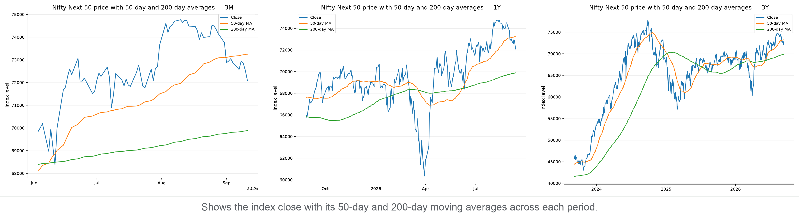
Support & Resistance
Zones use confirmed five-bar swing points clustered into 0.5% price bands; distances are measured from today's close.
3M: support 71,415–72,002 (0.1% below); resistance 72,258–73,051 (0.2% above)
1Y: support 71,136–72,002 (0.1% below); resistance 72,258–73,051 (0.2% above)
3Y: support 70,653–71,515 (0.8% below); resistance 72,683–73,624 (0.8% above)
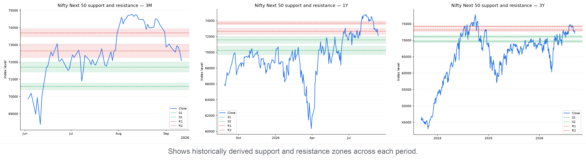
Drawdown
Drawdown is the percentage below the highest close reached within each chart's own period. Current pullback in context:
3M: Now 3.6% below peak · Worst 3.6% · At this level or lower on 1% of 72 trading days
1Y: Now 3.6% below peak · Worst 14.6% · At this level or lower on 18% of 258 trading days
3Y: Now 7.4% below peak · Worst 26.7% · At this level or lower on 55% of 742 trading days
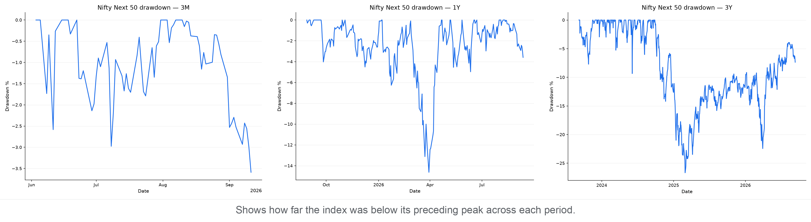
Nifty Smallcap 250
What it represents: A broad benchmark of 250 smaller listed Indian companies.
Close: 18,339.90 · Day change: -0.51% · 50D MA 18,190.47 (+0.82%) · 200D MA 16,787.88 (+9.24%) · Free-float market cap: ₹21.97 lakh crore (as of 11 September 2026)
Price
Price return shows how much the index rose or fell over each period. Current read — 3M: +8.2% · 1Y: +10.8% · 3Y: +49.2%.
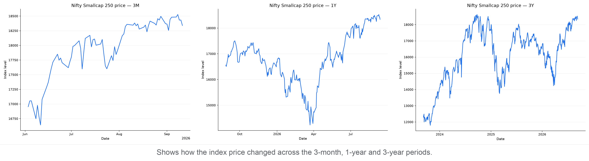
P/E
P/E compares index price with constituent earnings; the percentile shows where today's valuation sits within each period.
3M: 33.84 versus 34.31 median, 18th percentile (lower end)
1Y: 33.84 versus 30.02 median, 77th percentile (upper end)
3Y: 33.84 versus 30.02 median, 88th percentile (upper end)
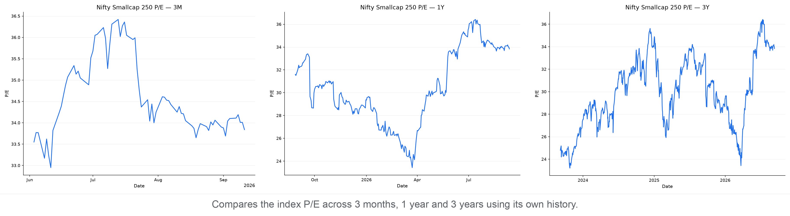
P/B
P/B compares index price with constituent book value; the percentile shows where today's P/B sits within each period.
3M: 3.53 versus 3.61 median, 3rd percentile (lower end)
1Y: 3.53 versus 3.58 median, 38th percentile (below the middle)
3Y: 3.53 versus 3.74 median, 22nd percentile (lower end)
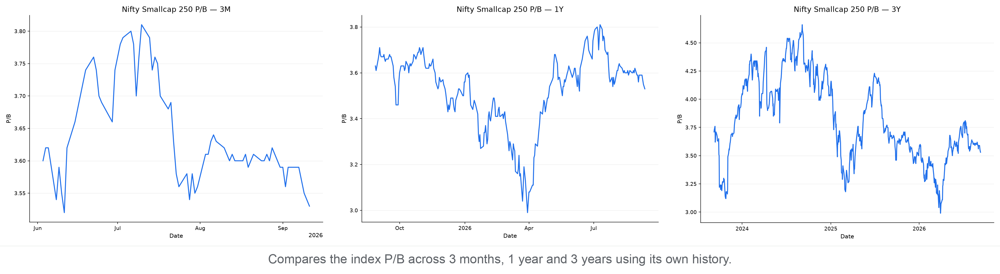
Moving Averages
The 50-day average shows the shorter trend and the 200-day average shows the longer trend. Current read — +0.8% versus the 50-day average; +9.2% versus the 200-day average; the 50-day is above the 200-day (bullish alignment).
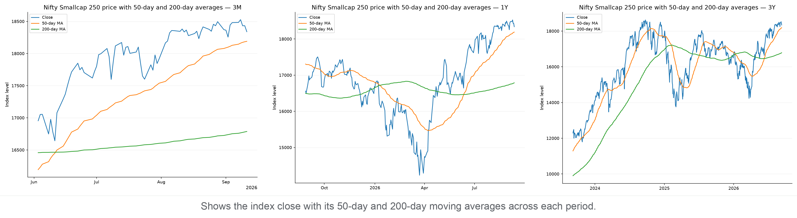
Support & Resistance
Zones use confirmed five-bar swing points clustered into 0.5% price bands; distances are measured from today's close.
3M: support 18,072–18,253 (0.5% below); resistance 18,382–18,597 (0.2% above)
1Y: support 18,072–18,253 (0.5% below); resistance 18,382–18,597 (0.2% above)
3Y: support 18,004–18,253 (0.5% below); resistance 18,364–18,474 (0.1% above)
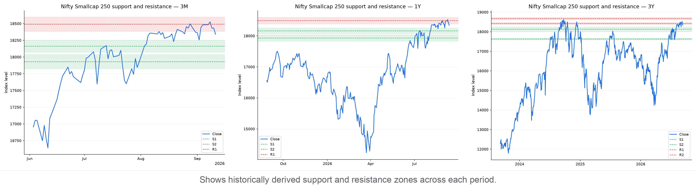
Drawdown
Drawdown is the percentage below the highest close reached within each chart's own period. Current pullback in context:
3M: Now 1.0% below peak · Worst 3.1% · At this level or lower on 24% of 72 trading days
1Y: Now 1.0% below peak · Worst 18.7% · At this level or lower on 71% of 258 trading days
3Y: Now 1.5% below peak · Worst 26.1% · At this level or lower on 74% of 742 trading days
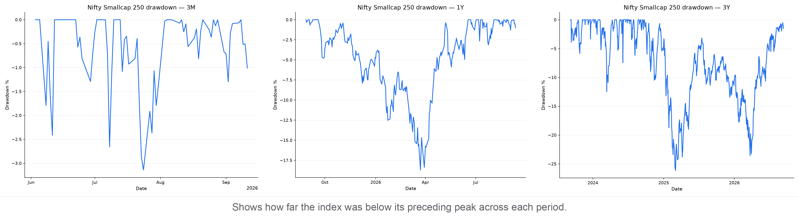
Market Breadth by Index
Market breadth counts how many constituents rose, fell, or were unchanged. It shows whether an index move has broad participation or is being driven by relatively few stocks; it is useful confirmation, not a prediction.
- Nifty 50: 12 advanced, 37 declined, 1 unchanged — broadly negative (A/D ratio 0.32).
- Nifty Midcap 100: 34 advanced, 66 declined, 0 unchanged — broadly negative (A/D ratio 0.52).
- Nifty Next 50: 13 advanced, 37 declined, 0 unchanged — broadly negative (A/D ratio 0.35).
- Nifty Smallcap 250: 82 advanced, 165 declined, 4 unchanged — broadly negative (A/D ratio 0.50).
Breadth Snapshot
Green shows advancing constituents, red declining constituents, and grey unchanged constituents.
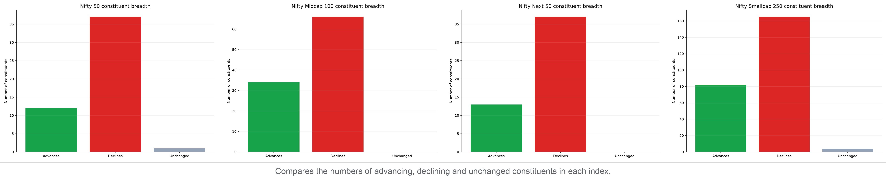
Sources
- Yahoo Finance
- Nifty 50 market data (^NSEI): https://finance.yahoo.com/quote/^NSEI
- Nifty Midcap 100 market data (NIFTY_MIDCAP_100.NS): https://finance.yahoo.com/quote/NIFTY_MIDCAP_100.NS
- Nifty Next 50 market data (^NSMIDCP): https://finance.yahoo.com/quote/^NSMIDCP
- Nifty Smallcap 250 market data (NIFTYSMLCAP250.NS): https://finance.yahoo.com/quote/NIFTYSMLCAP250.NS
- Nifty Indices
- Historical P/E and P/B data: https://www.niftyindices.com/BackPage/getpepbHistoricaldataDBtoString
- NSE India
- Free-float market capitalization: https://www.nseindia.com/index-tracker/NIFTY%2050
- Index price history: https://www.nseindia.com/api/historicalOR/indicesHistory
- Index snapshot and market breadth: https://www.nseindia.com/api/allIndices